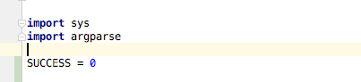

9) Cookie cutter projects and IDES for organized, delightful programming, cont.¶
Last time, we left off talking about the parse_cmdline(argv), which,
as you might hope, parses any flags on the command line into arguments
that will be stored in args. It also returns a return message that
flags whether any errors were found. 
Picking up from there: I don’t want to have to remember that 0 ==
success, so I’m going to make that a constant using option-command-c (if
you forget this shortcut, you’ll find the option after right-clicking
and looking under refactor).
I renamed it SUCCESS. It automatically defined the variable at the
top, under imports (where it belongs).
It only gave me the option to select 0 in that function. I’ll also
change it in the function above.

IDEA Ultimate
Note that as I start typing SU it suggests the rest of the variable
name. This will help us to correctly use a variable that has already
been defined (10 points for IntelliJ). I’ll also rename 2 to
IO_ERROR.
Lect08 Snapshot
Note that -h is an automatically assigned flag by the argparse
library we brought in. We can already try running our program in the
terminal! 
Now let’s try running the program without any flags, with the -n
flag, and with a flag that has not yet been defined.
Clearly, we have a working script, but it doesn’t yet do what we want! Let’s start with reading in the name of the file we want to process. We can use the commented hint to get us started.
Lect08 Snapshot
Our output (with no arguments) is now:
Now let’s read in the file, within the parser, as it is already set up
to handle an IO_ERROR. We’ll use a numpy function to read in the file,
so we’ll import that at the top, using import numpy as np. Note that
this line will be gray until we actually use the library, to let us know
that we are unnecessarily (so far) importing a library. Now let’s use a
built-in function to load our data into a python array.
Lect08 Snapshot
The program gave us a useful error note–there is no file in the current
directory called data.csv.
We could simply add one there, but that would not follow nice
organization. Instead, we’ll take the suggestion from the README.md
file in the data folder and place sample data in that folder. Let’s
replace the look_and_say.dat file with the sample patient data, and
rename it sample_data.csv.

Lect08 Snapshot
Now we can tell our program the relative location of our file!
Lect08 Snapshot
FYI: IntelliJ is always saving for you! Let’s save our changes to git.
Remember how I said that Git and IntelliJ play well together? Let’s
rightclick on our file and compare data_proc.py to our previous
commit.
Now let’s change the function canvas to data_analysis, call it
in main, and start modifying it.
Lect08 Snapshot
We’ll come back to more about numpy arrays; for now, I’ll just give you the correct syntax for calculating the values we desire.

Numpy axes

Lect08 Snapshot
These are exactly the numbers that I calculated before. Hooray!
It is fine to just print this when we have a small number of patients,
but it probably would be more helpful if we save the data to a file. As
you might expect, numpy has a savetxt function. First, we need to
have a file name for saving. I want it to be the base name of the input
file (sample_data in this case) to which I’ll add _stats.csv.
out_fname = os.path.basename(args.csv_data)
os is a library that we don’t have yet, so it is underlined in red.
If we click on it, we’ll get a red light bulb. Often this is helpful,
but I don’t see the option to import the os library, so I’ll do that
myself at the top of the file.
Screen shot
Now, I’ll remove the extension, and add the suffix _stats. Since
I’ll want to use this base name again (when saving an image), I’ll add
the .csv extension separately.
Screen shot
Now, let’s add a function that will plot the data. Again, we’ll come back to more information about different options in the imported package. For now, I’ll give you what is needed for this example as part of the complete code below:
""" data_proc.py Demo including: - reading in numeric data from a csv - calculating the mean, max, and min per row - plotting the results """ import sys import argparse import numpy as np import matplotlib.pyplot as plt import os SUCCESS = 0 IO_ERROR = 2 DEF_DATA_FILE = 'data.csv' def warning(*objs): """Writes a message to stderr.""" print("WARNING: ", *objs, file=sys.stderr) def data_analysis(data_array): """ Finds the average, min, and max for each row of the given array Parameters ---------- data_array : numpy array of patient data (one line per patient, daily measurements) in plasma inflammation units Returns ------- data_stats : numpy array array with same number of rows as data_array, and columns for average, max, and min values (in that order) """ num_patients, num_days = data_array.shape data_stats = np.zeros((num_patients, 3)) data_stats[:, 0] = np.mean(data_array, axis=1) data_stats[:, 1] = np.max(data_array, axis=1) data_stats[:, 2] = np.min(data_array, axis=1) return data_stats def parse_cmdline(argv): """ Returns the parsed argument list and return code. `argv` is a list of arguments, or `None` for ``sys.argv[1:]``. """ if argv is None: argv = sys.argv[1:] # initialize the parser object: parser = argparse.ArgumentParser() parser.add_argument("-c", "--csv_data_file", help="The location of the csv file with data to analyze", default=DEF_DATA_FILE) args = None try: args = parser.parse_args(argv) args.csv_data = np.loadtxt(fname=args.csv_data_file, delimiter=',') except IOError as e: warning("Problems reading file:", e) parser.print_help() return args, IO_ERROR return args, SUCCESS def plot_stats(base_f_name, data_stats): """ Makes a plot of the mean, max, and min inflammation per patient :param base_f_name: str of base output name (without extension) :param data_stats: numpy array with shape (num_patients, num_stats) where num_stats = 3 (mean, max, min) :return: saves a png file """ num_patients, num_stats = data_stats.shape x_axis = np.arange(1, num_patients + 1, 1) # red dashes, blue squares and green triangles plt.plot(x_axis, data_stats[:, 0], 'bs', x_axis, data_stats[:, 1], 'g^', x_axis, data_stats[:, 2], 'r.') plt.title('Patient Arthritis Data') plt.xlabel('Patient Number') plt.ylabel('Plasma Inflammation Units') out_name = base_f_name + ".png" plt.savefig(out_name) print("Wrote file: {}".format(out_name)) def main(argv=None): args, ret = parse_cmdline(argv) if ret != SUCCESS: return ret data_stats = data_analysis(args.csv_data) # get the name of the input file without the directory it is in, if one was specified base_out_fname = os.path.basename(args.csv_data_file) # get the first part of the file name (omit extension) and add the suffix base_out_fname = os.path.splitext(base_out_fname)[0] + '_stats' # add suffix and extension out_fname = base_out_fname + '.csv' np.savetxt(out_fname, data_stats, delimiter=',') print("Wrote file: {}".format(out_fname)) # send the base_out_fname and data to a new function that will plot the data plot_stats(base_out_fname, data_stats) return SUCCESS # success if __name__ == "__main__": status = main() sys.exit(status)This gives us the following plot:
Sharing on Github¶
Of course, as shown before, I can make a repo on github and follow the directions given to connect my local repository to the one on github, and then push the project there.
Screen shot
Merging conflicts with IntelliJ¶
Previously I showed that you can directly edit a conflicted file to remove a conflict. If there is a conflict (say a collaborator and you changed the same flag description), you’ll get a warning of the merge cannot be done automatically.

Screen shot
I greatly prefer resolving conflicts with IntelliJ, since it will show you exactly what parts of lines have conflicts, and make it easy to choose which version to keep. You can easily take some conflicted changes from one version, and others from the other file.
In intelliJ, conflicted files will be highlighted in red and underlined.

Screen shot
Right-click on the file, and under git, choose “Resolve Conflicts”.
Screen shot
A new window will appear with three options: accept all of the changes
from your current working branch (“yours”), accept all of the changes
from the other version (“theirs”), or “merge” which will let you examine
the difference and choose what changes you want to keep, which can be a
combination of “yours” and “theirs”. We’ll choose that. 
A new three-panel window will appear that has three panels: “Your version” and branch on the left, the conflicted version the right, and in the center will be the result after you make the changes. In this case, there are some non-conflicted insertions (in blue) and the conflict is shown in red. In all cases we can either discard the change (the “X” in the gray gutter) or accept it into the final result (the “>>” or “<<” in the gray gutter). When all changes are done, click “Apply” in the bottom-right corner. Remember to commit the merge. If the conflict came from a collaborator, suggest that they pull the merged version so that your work better stays in sync.
Screen shot
Next up: More on numpy, plotting, testing, and the power of the cookiecutter package!